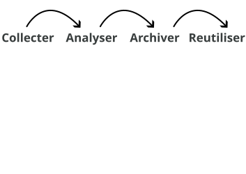
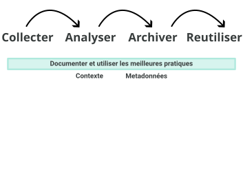
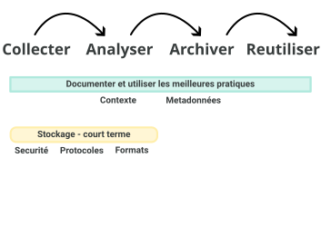
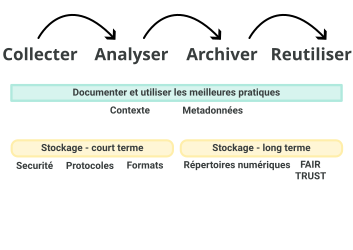
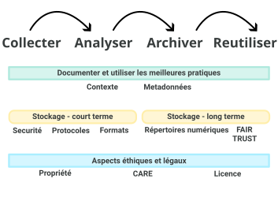
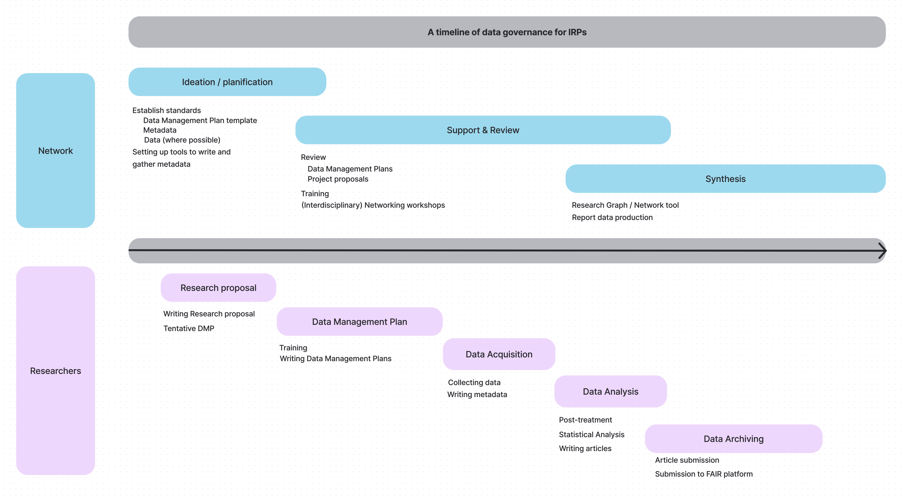
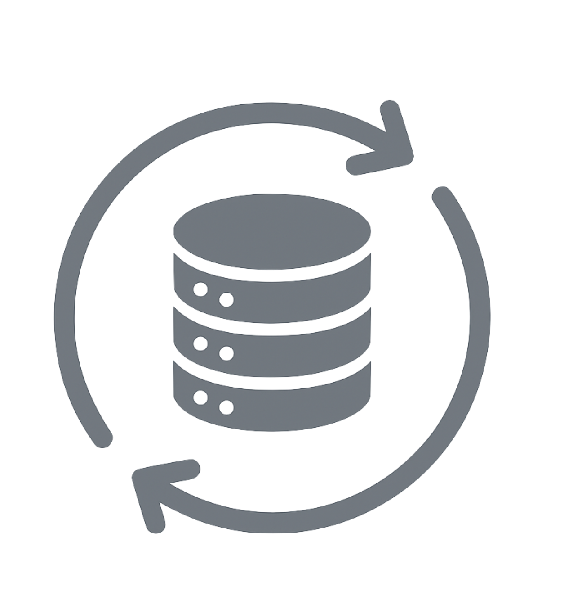
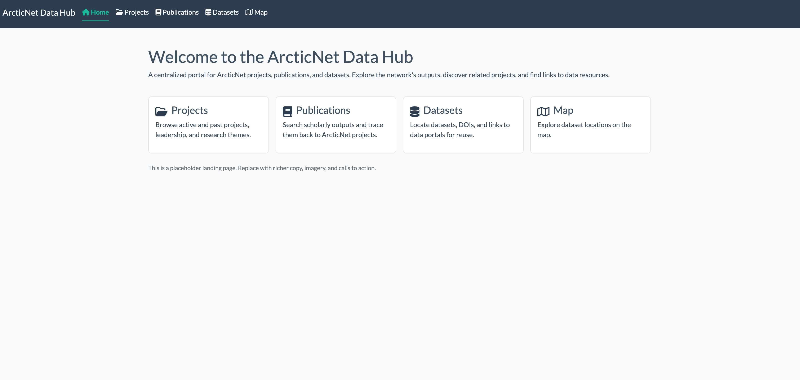
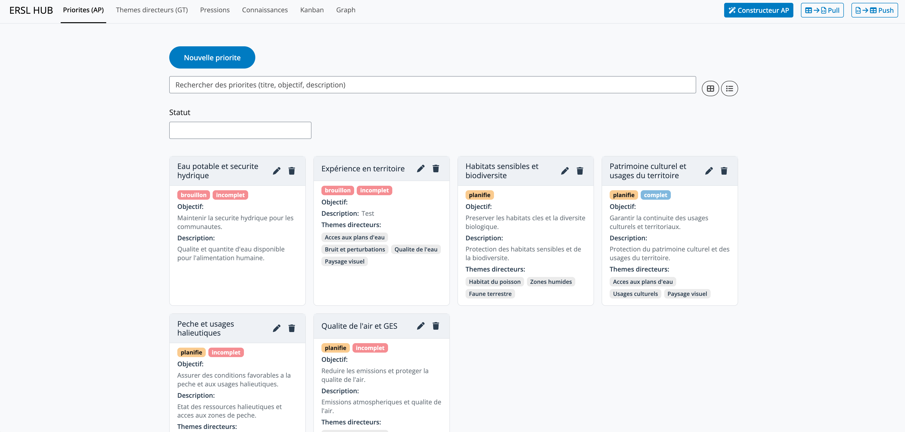

Gestion des données de recherche
2026-02-26
À propos de nous


À propos de nous
inSileco & ArcticNet (depuis 2023)
- Développer des critères pour la gestion des données de projets
- Examiner et fournir des commentaires sur les plans de gestion des données des projets
- Accompagner les chercheurs dans leurs pratiques et outils de GDR
- Maintenir et enrichir les archives de données à long terme d’ArcticNet
- Offrir de la formation et du renforcement des capacités (ex. ce webinaire)
Structure du webinaire
- Contexte
- Flux de travail
- Considérations organisationnelles
- Pratique : rédigeons votre PGD
- Avenir
- Questions et réponses
Contexte
Données de recherche
Données de recherche
- Les chercheurs transforment des faits en connaissances
- collectent, analysent et archivent des données de recherche
- Définitions larges :
- informations enregistrées soutenant les résultats de recherche
- collections structurées d’octets
- informations enregistrées soutenant les résultats de recherche
Qu’est-ce que la GDR ?
GDR : Gestion des données de recherche
- Gestion active des données de recherche
- Comprend la planification, la documentation, le stockage, le partage
- Englobe à la fois les pratiques techniques et la gouvernance
Les données de recherche sont volumineuses
GBIF : Système mondial d’information sur la biodiversité
- Collecte de données à vitesse et volume sans précédent
- Ex : GBIF
- 125 millions d’enregistrements en 2007
- 1,6 milliard en 2020
- Augmentation de 1 150 % en 13 ans
{kind=link}
Un LLM moderne est généralement entraîné avec 1x10^13 jetons de deux octets, soit 2x10^13 octets. (Yann Lecun, X, 2024)
Les données de recherche sont hétérogènes
- Les données varient considérablement entre et au sein des disciplines
- Différentes technologies, différents formats
- Nouvelles questions de recherche, nouvelles données
{kind=link}
Les données de recherche sont précieuses
- Nous avons besoin de données fiables pour mieux comprendre et prédire
- anticiper/atténuer les changements futurs
- Ex : bonne évaluation des changements de température et de précipitations
- Certaines données sont difficiles et coûteuses à collecter
- Les données arctiques en sont de bons exemples
- Les données passées et actuelles sont cruciales pour les générations futures
- On ne peut pas collecter les données du passé
- Des fonds publics considérables ont été dépensés pour les collecter
Donc,
- Les données de recherche sont volumineuses et hétérogènes
- ➡️ difficiles à gérer
- Les données de recherche sont extrêmement précieuses
- ➡️ doivent être gérées
Nous devons prendre bien soin de tous les jeux de données collectés
Flux de travail des données
Flux de travail des données dans les projets de recherche

En résumé
Collecter
- Utiliser les meilleurs protocoles
- Choisir le bon format de données
- Utiliser un stockage sécurisé
Analyser
- Documenter toutes les manipulations de données
- Sauvegarder les données traitées
- Partager votre code
En résumé
Archiver
- Choisir un dépôt numérique qui respecte les principes clés
- S’assurer que vos métadonnées sont complètes
Réutiliser
- ‘Futur vous’ ou d’autres scientifiques
- Ajouter une licence à vos données
- Documenter l’utilisation de jeux de données secondaires
Documenter pour contextualiser

Documentation et métadonnées
Métadonnées ?
- Des données sur les données
- Décrivent le contexte et non le contenu
- Fournissent des champs cohérents pour qui, quoi, où, quand, comment
- Exemples de standards :
- Dublin Core ➡️ descripteurs à usage général
- ISO 19115 ➡️ métadonnées géospatiales
- Darwin Core ➡️ métadonnées sur la biodiversité
- DataCite Schema ➡️ métadonnées de jeux de données pour les DOI
Standards de métadonnées vs standards de données
Les standards de métadonnées décrivent les données elles-mêmes (contexte et découverte), tandis que les standards de données définissent comment les données sont structurées. Ensemble, ils assurent l’interopérabilité et la réutilisation.
Documentation et métadonnées
Dublin Core ?
- Un standard de métadonnées générique utilisé dans toutes les disciplines
- Axé sur : qui, quoi, où, quand
- La syntaxe est lisible par machine (XML, JSON) mais aussi lisible par l’humain
Exemple d’enregistrement
Stocker vos données

Stocker vos données
- Utiliser un stockage sécurisé
- Une copie sur un seul ordinateur ne suffit pas
- Copies multiples, en utilisant le stockage sur le cloud
- Si possible, utiliser la règle de sauvegarde 3-2-1
- Quelle est la sensibilité de vos données ?
Archiver vos données

Choisir un dépôt numérique
Dépôts de données
- Nationaux/Institutionnels ➡️ Dépôt fédéré de données de recherche (DFDR), Borealis
- Disciplinaires ➡️ GBIF, OBIS, GenBank, PANGAEA, PDC
- Usage général ➡️ Zenodo, Dryad, Figshare, Dataverse
Choisir un dépôt qui est :
- Approprié pour votre type de données et votre communauté
- De confiance (certifié, pérennité à long terme)
- Aligné sur les principes FAIR et TRUST (standards de métadonnées, identifiants pérennes)
Principes FAIR
(F)Facile à trouver (Findable)(A)Accessible (Accessible)(I)Interopérable (Interoperable)(R)Réutilisable (Reusable)
Objectifs :
- Rendre les données faciles à découvrir grâce à des métadonnées riches
- S’assurer que les données sont accessibles sous des conditions claires
- Promouvoir l’interopérabilité entre disciplines et outils
- Permettre la réutilisation grâce aux licences et à une documentation claire
 Identifiants pérennes (PIDs)
Identifiants pérennes (PIDs)
Principes TRUST
(T)Transparence (Transparency)(R)Responsabilité (Responsibility)(U)Orientation utilisateur (User Focus)(S)Pérennité (Sustainability)(T)Technologie (Technology)
{kind=link}
Objectifs :
- Renforcer la confiance dans les dépôts numériques
- Assurer l’authenticité, l’intégrité et la fiabilité des données
- Prioriser les besoins des communautés d’utilisateurs
- Garantir la préservation et l’accessibilité à long terme
- Fournir une infrastructure sécurisée, pérenne et interopérable
Polar Data Catalogue (PDC)
{kind=link}
- Dépôt certifié CoreTrustSeal : les données sont sécurisées, correctement gérées et conformes aux principes FAIR.
- Métadonnées standardisées
- Soutient les chercheurs d’ArcticNet
Borealis
Tip
OCUL = Ontario Council of University Libraries
Au Canada, Borealis est une instance nationale du dépôt Dataverse hébergée par le Scholars Portal de l’OCUL à l’Université de Toronto.
{kind=link}
Licencier vos données
- Une licence indique aux autres comment ils peuvent utiliser vos données
- Choix courants :
- CC-BY ➡️ utilisation avec attribution
- CC0 ➡️ aucune restriction (domaine public)
- Ententes personnalisées ➡️ pour les données sensibles, autochtones ou commerciales
Indiquez clairement la licence dans vos métadonnées, votre README ou votre fiche de dépôt
Partager vos (méta)données
Important
Vous ne pourrez pas toujours partager vos données, mais vous pouvez toujours partager vos métadonnées.
Aspects éthiques et juridiques

Principes CARE
(C)Bénéfice collectif (Collective Benefit)(A)Autorité de contrôle (Authority to Control)(R)Responsabilité (Responsibility)(E)Éthique (Ethics)
Objectifs :
- Orientés vers les personnes et les objectifs
- Droits des Premières Nations sur les données et gouvernance
- Inspirés de l’PCAP®
- Complètent les principes FAIR
{kind=link}
Anticiper
- Réfléchir à l’ensemble de ce processus avant de le réaliser
- Rédigez un PGD (DMP)!
PGD : Plan de gestion des données
- Cela peut être relativement rapide
Considérations organisationnelles
La GDR dans les PRI
PRI : Programme de recherche interdisciplinaire
- Échelle et complexité : projets, équipes et disciplines multiples
- Continuité : la longue durée des programmes nécessite une préservation robuste
- Opportunités : des données bien gérées favorisent la réutilisation, l’intégration, de nouvelles collaborations et de nouvelles perspectives
- Le réseau définira et promouvra les meilleures pratiques de GDR
- Même processus x nombre de projets !
- Efforts requis en coordination
Politique des trois organismes sur la GDR (2021)
- S’applique au CRSNG, CRSH, IRSC
- Les institutions doivent développer et publier des stratégies institutionnelles de GDR
- Les chercheurs doivent :
- Préparer et maintenir des plans de gestion des données
- Déposer les données dans des dépôts de confiance lorsque approprié
- Assure que la recherche canadienne s’aligne sur les pratiques internationales de science ouverte
- La conformité est de plus en plus liée aux exigences de financement
Principes d’ArcticNet
En d’autres termes : ce qui est attendu de vous en tant que chercheur
- Les données financées par ArcticNet = un bien public ➡️ aussi ouvertes que possible, aussi fermées que nécessaire
- Les chercheurs doivent assurer :
- Partage en temps opportun ➡️ données rendues publiques rapidement, sauf restriction
- Publier les métadonnées ➡️ publier et partager vos métadonnées (ex. Polar Data Catalogue)
- Respect des droits autochtones ➡️ respecter la propriété, l’accès et le contrôle des Inuits, des Premières Nations et des Métis (CARE, PCAP®, SDRNI)
- Citables et préservées ➡️ les données doivent être publiables, citables et préservées lorsque approprié
- Interopérabilité et connectivité ➡️ lien avec les systèmes de données arctiques canadiens et internationaux, éviter la duplication
- Meilleures pratiques ➡️ suivre les exigences éthiques, juridiques, culturelles et des bailleurs de fonds ; utiliser l’infrastructure existante lorsque possible
- Soutien et accompagnement ➡️ les chercheurs s’engagent dans la formation, la sensibilisation et les ressources fournies
Calendrier et double responsabilité
Réseau : équilibrer autonomie et coordination

Calendrier et double responsabilité
Chercheurs : gérer et documenter les données du projet de manière responsable

Guide pratique
Construire votre plan de gestion des données
Qu’est-ce qu’un PGD ?
PGD : Plan de gestion des données
Un plan de gestion des données (PGD) est un document formel, généralement de 1 à 2 pages, qui décrit comment les données seront gérées pendant et après un projet.
Qu’est-ce qu’un PGD ?
PGD : Plan de gestion des données
Avantages :
- Exigé par de nombreux organismes subventionnaires, dont les trois organismes (IRSC, CRSNG et CRSH)
- Assure la faisabilité des propositions de recherche
- Démontre une gestion responsable des fonds publics
- Établit les attentes en matière de stockage, de partage et de préservation
- Fondement d’une bonne collaboration et réutilisation
- Facilite la conformité avec certaines revues
- Améliore la visibilité et les citations des jeux de données
Pourquoi les PGD comptent dans les PRI
- PRI = écosystèmes distribués ➡️ objectifs, données et pratiques diversifiés
- Les PGD collectifs donnent de la visibilité sur les résultats attendus
- Permettent une coordination précoce des standards et outils
- Révèlent des chevauchements, synergies et possibilités de partage des coûts
- Réduisent la duplication et améliorent la cohérence du programme
Sections clés d’un PGD
Répondez à ces questions avec substance et vous aurez un PGD complet :
- Collecte de données ➡️ Quelles données, formats, volume, protocoles ?
- Documentation et métadonnées ➡️ Comment les données seront-elles décrites ? Quels standards ?
- Stockage et protection ➡️ Où seront les données de travail et comment seront-elles protégées ?
- Analyse des données ➡️ Comment les données seront-elles analysées ?
- Préservation et archivage ➡️ Quel dépôt, quels formats pour le long terme ?
- Partage et réutilisation ➡️ Qui peut y accéder, quand, sous quelle licence ?
- Aspects juridiques et éthiques ➡️ Comment les questions juridiques, de vie privée, de consentement et de droits autochtones sur les données sont-elles abordées ?
Outils et modèles
- Utilisez les outils disponibles si possible
- Assistant PGD (outil en ligne du Canada)
- DMP Tool
- Le réseau peut fournir un modèle adapté à votre programme
- Exemples et conseils disponibles sur :
Bonnes pratiques
Conseils pour le PGD
- Commencez tôt ➡️ ébauchez le PGD dès l’étape de la proposition
- Traitez-le comme un document vivant ➡️ mettez-le à jour au fur et à mesure de l’évolution du projet
- Réutilisez les formulaires / standards de métadonnées existants lorsque possible (plus de détails à venir)
- Restez concis mais opérationnel
- Alignez-vous sur les principes FAIR, CARE et TRUST
Guide pratique
Objectif
Outiller les chercheurs avec des étapes concrètes pour gérer les données de manière responsable, efficace et conforme aux attentes du réseau et des organismes subventionnaires.
À la fin, vous devriez savoir quelles étapes entreprendre pour préparer et mettre à jour un plan de gestion des données adéquat
Objectif
Créons un PGD ensemble. Commençons ici.

Liste de vérification
Collecte de données
Documentation et métadonnées
Stockage et protection
Analyse des données
Préservation et archivage
Partage et réutilisation
Aspects juridiques et éthiques
Collecte de données
Collecte de données
Questions directrices
- Quels types de données vais-je collecter ?
- observationnelles, expérimentales, computationnelles, dérivées
- Quels instruments, capteurs ou méthodes vais-je utiliser ?
- protocoles de terrain, capteurs, analyses en laboratoire, pipelines logiciels
- Comment vais-je assurer le contrôle de qualité avant, pendant et après la collecte ?
- calibration, échantillons en double, vérification des erreurs
- Comment vais-je organiser et nommer les fichiers ?
- noms de fichiers/dossiers cohérents, vocabulaires contrôlés
Collecte de données
Assurance qualité / Contrôle qualité (AQ/CQ)
- Avant la collecte ➡️ calibration des instruments, protocoles standardisés
- Pendant la collecte ➡️ échantillons en double/triple, échantillons témoins, blancs de terrain
- Après la collecte ➡️ vérifications de validation, détection d’erreurs, suivi des versions
Collecte de données
Organisation et nommage
- Utilisez des noms de fichiers et dossiers cohérents et descriptifs
- Évitez les espaces/caractères spéciaux ➡️ utilisez
_ou-. - Incluez le versionnage et les dates (ex.
projetA_echantillons_2025-03-01_v1.csv) - Organisez les dossiers par projet/étude/site/date plutôt que selon les préférences du chercheur
- Utilisez des vocabulaires contrôlés / ontologies lorsque disponibles ➡️ interopérabilité
À faire et à ne pas faire
✅ lacC_notes_terrain_2025-03-01_v2.csv ❌ data latest & updated.xlsx
Documentation et métadonnées
Documentation et métadonnées
Questions directrices
- Comment vais-je documenter mes données pour que d’autres (ou mon futur moi) puissent les comprendre ?
- cahiers de laboratoire/terrain, dictionnaires de données, fichiers README, protocoles
- Quel(s) standard(s) de métadonnées vais-je utiliser ?
- Dublin Core, ISO 19115, Darwin Core, DataCite Schema
- Quand les métadonnées seront-elles créées et mises à jour ?
- dès le début du projet, mises à jour régulièrement, finalisées à l’archivage
Documentation et métadonnées
Exigences d’ArcticNet
- À partir de l’année 2, les chercheurs doivent fournir des liens vers des fiches de métadonnées dans des dépôts reconnus
- Les métadonnées doivent être ouvertement accessibles
- Le financement sera retenu si les fiches de métadonnées sont manquantes ou inaccessibles
- Pour les données appartenant aux Autochtones ➡️ les chercheurs doivent identifier l’organisation responsable de leur stockage et gestion
- La publication des métadonnées reste requise
Engagement d’ArcticNet
Rôle :
- Définir les standards de métadonnées pour les projets
- Accompagner les chercheurs dans la préparation des métadonnées
- Fournir des outils/modèles pour faciliter la soumission des métadonnées
Initiatives
- Travail avec le Polar Data Catalogue (PDC) pour héberger les métadonnées des projets
- Fourniture d’un modèle de métadonnées PDC
- Offre de soutien pour la préparation et la soumission
Stockage et protection

Stockage et protection
Questions directrices
- Où les données seront-elles stockées pendant le projet ?
- serveurs institutionnels, stockage infonuagique certifié, supports externes
- À quelle fréquence et où les sauvegardes sont-elles effectuées, et sont-elles automatisées ?
- fréquence, nombre de copies, emplacements
- Qui peut accéder aux données et comment l’accès est-il protégé ?
- permissions, authentification, chiffrement
- Quelle capacité de stockage sera nécessaire ?
- besoins de stockage prévus (Go/To)
- Qui fournit, paie et maintient le stockage et les sauvegardes ?
- qui paie et quelle infrastructure est fournie
Stockage et protection
Bonnes pratiques
- Privilégier le stockage institutionnel ou certifié plutôt que les ordinateurs portables/clés USB personnels
- Utiliser un stockage chiffré pour les données sensibles
- Automatiser les sauvegardes autant que possible
- Documenter clairement les pratiques de stockage dans le PGD
- Planifier la préservation à long terme (plus de détails bientôt)
Considérations particulières
- Données sensibles / autochtones ➡️ utiliser des mesures de protection approuvées par la communauté, respecter la souveraineté
- Grands volumes / « mégadonnées » ➡️ aborder l’infrastructure, les coûts, les serveurs spécialisés
- Contraintes de terrain ➡️ décrire les solutions temporaires (ordinateurs portables de terrain, disques portables) et comment les données seront sécurisées jusqu’au téléchargement
Analyse des données
Analyse des données
Questions directrices
- Quels logiciels, outils ou pipelines seront utilisés ?
- R, Python, MATLAB, ArcGIS, QGIS, etc.
- Comment les étapes d’analyse seront-elles documentées ?
- scripts, carnets Jupyter, R Markdown, Quarto
- Comment assurerez-vous la reproductibilité ?
- contrôle de version (GitHub, GitLab), conteneurs (Docker)
Analyse des données
Analyse des données
Bonnes pratiques
- Privilégier les outils à code source ouvert lorsque possible
- Partager les scripts d’analyse avec vos jeux de données
- Séparer les données brutes et traitées.
- Documenter les hypothèses, paramètres et versions des logiciels
Renforce la confiance, l’efficacité et l’utilité à long terme des résultats
Une note sur la reproductibilité
{kind=link}
Préservation et archivage
Préservation et archivage
Questions directrices
- Quel dépôt de confiance sera utilisé pour la préservation à long terme ?
- Borealis, DFDR, Dryad, Zenodo, GBIF, OBIS
- Dans quels formats les données seront-elles archivées ?
- CSV, NetCDF, GeoTIFF, JSON (éviter les formats avec perte comme JPEG, MP3)
- Comment les jeux de données seront-ils identifiés et cités de manière pérenne ?
- DOI, URI
- Pendant combien de temps les données seront-elles préservées ?
- généralement ≥ 5–10 ans, idéalement indéfiniment
Objectif : s’assurer que vos données restent utilisables et accessibles bien au-delà du projet
Préservation et archivage
Bonnes pratiques
- Déposer les données au moment de la publication, pas des années plus tard
- Archiver les données brutes et traitées, lier aux scripts d’analyse
- Utiliser les fonctionnalités de versionnage du dépôt plutôt que des noms de fichiers manuels
- Assurer l’alignement avec les principes FAIR et CARE
Considérations particulières
- Données sensibles ➡️ anonymisation, accès restreint, stockage sécurisé à long terme
- Souveraineté des données autochtones ➡️ respecter CARE, PCAP®, SDRNI, protocoles communautaires
- Grands volumes ➡️ considérer des dépôts spécialisés, le CHP ou des archives infonuagiques
Préservation et archivage
Quelques notes sur les formats de fichiers
Éviter les formats propriétaires et inadaptés
- Tous les formats ne sont pas durables pour les données de recherche à long terme. Évitez :
- Formats propriétaires : nécessitent un logiciel spécifique qui peut devenir indisponible (ex. .xlsx, .shp, .sav, .psd, .docx avec macros)
- Formats avec forte dépendance aux versions : les versions plus anciennes/récentes peuvent être illisibles sans le logiciel exact (ex. types de fichiers exclusifs à ArcGIS)
- Formats compressés / avec perte : réduisent la qualité des données et limitent la réutilisation (ex. .jpg, .mp3)
- Fichiers chiffrés ou protégés par mot de passe : bloquent la découverte, la réutilisation et les flux de préservation
Règle générale : si un fichier nécessite un logiciel spécial, ou risque de perdre de l’information lors de l’enregistrement, ce n’est pas un bon format d’archivage.
Formats ouverts recommandés par type de données
Données tabulaires ➡️ CSV, Parquet
Données spatiales ➡️ GeoPackage, GeoTIFF, NetCDF
Images ➡️ TIFF (non compressé), PNG
Audio / Vidéo ➡️ WAV, MP4 (codec H.264)
Textes / Documents ➡️ TXT, PDF/A, XML, JSON
Métadonnées ➡️ XML, JSON, schémas standardisés (ex. ISO 19115, Darwin Core)
Choisir des formats qui sont :
- Ouverts et non propriétaires
- Bien documentés et largement supportés
- Durables pour la préservation à long terme
Préservation et archivage
Exigences d’ArcticNet
- Pas de dépôt centralisé ArcticNet ➡️ les projets choisissent un dépôt à long terme approprié
- Privilégier les options certifiées et en accès libre (PDC, Nordicana-D, GBIF, OBIS, DFDR)
- Déposer toutes les données et métadonnées appuyant les résultats
- Planifier tôt, utiliser des formats non propriétaires (CSV, TIFF, NetCDF)
- Conserver les données aussi longtemps que requis par les parties prenantes et les organismes subventionnaires
- Indiquer dans le PGD ce qui sera préservé et toute restriction
Recommandations d’ArcticNet
- Les chercheurs décident du dépôt le plus approprié pour leur discipline et type de données
- Se concentrer sur la pérennité du dépôt, les DOI et l’accès libre
- La préservation peut inclure les données brutes, traitées et dérivées lorsque pertinent
- Les données sensibles ou autochtones peuvent nécessiter un accès restreint ou des mesures de protection
- La justification de la conservation et de la préservation doit être claire dans le PGD
Partage et réutilisation

Partage et réutilisation
Questions directrices
- Qui peut accéder aux données et quand ?
- ouvert, sous embargo ou restreint
- Quelle licence régira la réutilisation ?
- CC-BY, CC0 ou conditions personnalisées
- Comment les données seront-elles documentées ?
- les métadonnées et le README assurent que d’autres peuvent réutiliser les données
Objectif : rendre les données disponibles de manière claire, utilisable et responsable
Partage et réutilisation
Bonnes pratiques
- Utiliser des dépôts qui supportent les DOI et les licences
- Publier des articles de données ou citer les DOI des jeux de données dans les articles
- Lier les données aux publications, au code et aux jeux de données connexes
- Être transparent sur les conditions de réutilisation
Considérations particulières
- Données commercialement sensibles ➡️ embargos ou accès restreint
- Collaborations ➡️ partage progressif (interne d’abord, ouvert ensuite)
Partage et réutilisation
Exigences d’ArcticNet
- Les données doivent être trouvables, accessibles, interopérables et réutilisables (FAIR)
- Métadonnées publiées tôt dans un catalogue reconnu (ex. re3data, PDC, DFDR)
- Déposer les données dans un dépôt de confiance avec des identifiants pérennes (DOI)
- Les utilisateurs doivent citer et reconnaître les créateurs de données
- Toute restriction (sensible, autochtone, sécurité) doit être justifiée dans le PGD
Recommandations d’ArcticNet
- Rendre les données disponibles aussi ouvertement et rapidement que possible, avec un délai minimal
- « Aussi ouvert que possible, aussi fermé que nécessaire » (considérations éthiques et juridiques)
- Les données autochtones et sensibles nécessitent des mesures de protection, un consentement éclairé et le respect de la souveraineté (CARE, PCAP®, SDRNI)
- Des embargos ou un accès restreint peuvent s’appliquer, mais doivent être transparents et limités dans le temps
- Les demandes d’accès aux données ne devraient pas être refusées de manière déraisonnable
Aspects juridiques et éthiques
Aspects juridiques et éthiques
Questions directrices
- Des approbations éthiques sont-elles requises ?
- comités d’éthique de la recherche / comités d’examen institutionnels, examen communautaire
- Des connaissances ou données autochtones seront-elles collectées ?
- CARE, PCAP®, SDRNI, ententes communautaires
- À qui appartiennent les données et comment la propriété intellectuelle sera-t-elle gérée ?
- propriété, licences, ententes industrielles
- Y a-t-il des restrictions juridiques sur les données ?
- trois organismes, lois sur la vie privée, obligations internationales
Aspects juridiques et éthiques
Bonnes pratiques
- Données sensibles ou autochtones ➡️ respecter CARE, PCAP® et les protocoles communautaires
- Expliquer clairement comment les droits des participants sont protégés
- Utiliser des ententes écrites de partage de données lorsque applicable
- Consulter la gouvernance communautaire pour la recherche autochtone
- Être transparent sur les données qui ne peuvent pas être partagées et pourquoi
Considérations particulières
- Institutions multiples ➡️ harmoniser les exigences éthiques et juridiques
- Les partenaires autochtones peuvent exiger des dépôts communautaires ou un accès contrôlé
- Considérer le transfert transfrontalier de données et la conformité
Avenir
Tendances émergentes et opportunités
L’avenir de la GDR dans les PRI
- PRI : équipes, méthodes, types de données et cultures de données diversifiés
- Une gouvernance entièrement centralisée est irréaliste
- Besoin d’approches flexibles qui :
- préservent l’autonomie des projets
- permettent la coordination
- Solution : outils modulaires et interopérables
- Prochaine étape pour la GDR dans les PRI : métadonnées interopérables
Carrefours de métadonnées interopérables
Carrefour de données ArcticNet

Carrefour d’évaluation régionale

Des métadonnées à l’interopérabilité
- Interopérabilité des métadonnées = chemin vers l’interopérabilité des données
- Combinée aux identifiants pérennes : des actifs découvrables, liables et réutilisables
- Permet :
- la découverte et la synthèse inter-projets
- des flux de travail automatisés
- des tableaux de bord, la validation et le suivi de la réutilisation
- des applications d’IA / LLM (graphes de connaissances, découverte assistée, questions-réponses)
Merci !